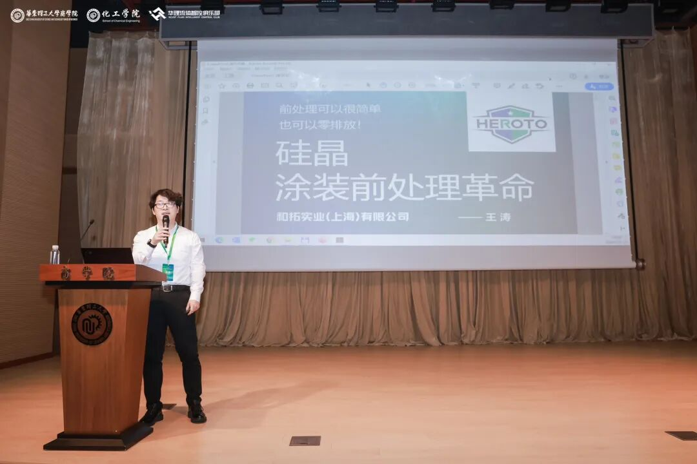

封面候选 · 渠道裁切与使用范围待客户确认
制造业 · 涂装前处理5、老板问得最多的6个问题：硅晶表面处理到底贵不贵？好不好落地？
和拓化学 · 企业技术内容 / 排版稿 v2 / 1877 字符
不藏着掖着，我们把账一笔笔算清楚
表面处理这个行当，老板们最怕两件事：一是环保检查提心吊胆，二是成本越控越高。 传统磷化、陶化工艺工序多、能耗大、废水处理贵，换新工艺又怕“水土不服”——设备怎么改？成本涨多少？工人能上手吗？

原稿配图 · 正文块 6；图示内容请客户复核和拓化学的硅晶LUMINCOAT工艺推出以来，被问到最多的就是这6个实在问题。今天统一回复，全是干货。
一、硅晶处理价格怎么算？每平米成本多少？
直接药剂成本与传统陶化/硅烷持平，每平方米0.2~0.3元。
但真正的省钱大头在综合成本。我们拿一条典型涂装线算账：
电费：前处理水槽从7个减到2个，每月省电费3.4万元，节电70%
水费：省去溢流水和开槽用水，每月节水1500吨，节省8100元，节水99%
废水处理费：1500吨废水/月，零排放后每月省3.75万元
人工与药剂管理：槽液管控极简，管理成本节省60%以上
每月合计节省约8万元，全年近96万元，直接降低前处理总成本50%以上。你算算，这笔账划不划算？
二、工厂改造难不难？要不要停产？
硅晶工艺最大的优点就是“不折腾”。
传统磷化工艺需通过8道工序、合计13分钟：预脱脂（50℃，3分）→ 脱脂（50℃，2分）→ 水洗 → 水洗 → 表调 → 磷化（40-50℃，3分）→ 水洗 → 水洗 → 烘干；硅晶工艺仅需1~3道工序（浸泡6-10分钟/喷淋3-5分钟，常温）：硅晶B →（硅晶B）→ 烘干，完全无渣。
不需要改造现有产线——你原有的槽子、喷淋设备都能用，只需换药剂、调整槽位即可。如果工件油污轻，甚至一个槽、一个产品、一道工序就搞定。
对于大型结构件或户外修补，还有手工擦拭型硅晶，自然晾干后直接喷涂，连产线都不用上。
整个切换过程不影响正常生产，不需要停产改造。
三、中小工厂适配吗？没技术员能操作吗？
这正是硅晶的强项。
适用所有金属材质：铁、镀锌、不锈钢、铝合金、铜合金，一条线共处理，不用分槽。
操作傻瓜式：槽液浓度通过专用追踪剂2秒测出，无需频繁滴定化验。
可选数字化自动加药系统：实时监测、云端查看、手机APP远程干预，实现无人化。
 和拓宣传册 2025 · 原图 5（宣传资料，指标须另附检测或测算依据）
和拓宣传册 2025 · 原图 5（宣传资料，指标须另附检测或测算依据）中小工厂没有专职工程师？没关系。硅晶的简便性让普通操作工经过简单培训就能上手。设备投入还能减少70%，这对资金不宽裕的工厂是实打实的利好。
四、怎么帮工厂降本？具体体现在哪？
1、减少返工，提升良率
某汽车零部件厂生产空气干燥罐，原陶化工艺喷涂后要滚边铆合、折弯180°，漆面开裂不良率超20%。换硅晶后，不合格率降到1%以下。
2、节省环保成本
硅晶工艺全程无水洗，没有漂洗水排放。槽液经油水分离处理后循环回用，最终只有极少固废，轻松实现废水零排放。新项目环评、老项目整改都不再头疼。
3、降低耗材浪费
精准的药剂消耗——只有带液损失，没有沉渣，没有倒槽浪费。药剂费用不增加，但水电人工省了一大截。
五、处理工期多久？批量订单交付周期？
单批次处理时间极短：喷淋3~5分钟，浸泡6~10分钟，均为常温。相比传统工艺的13分钟甚至更长，效率提升2~3倍。
而且硅晶膜烘干后可直接喷涂，中间无需等待钝化反应时间。对于批量订单，同等时间内产能大幅增加，交付周期自然缩短。
另外，硅晶处理后的冷轧板裸膜放置7~15天不返锈，这意味着工序间防锈压力小，不会因生锈而返工耽误工期。
六、硅晶涂层能用多久？后期维护成本高吗？
硅晶与金属基材形成Si-O-Me共价键，再与面漆交联反应，形成化学键稳固的膜层结构。第三方测试数据显示：
冷轧板+硅晶+粉末：500小时中性盐雾
铝板+硅晶+喷涂：1500小时中性盐雾
华为、中集等第三方测试：1000小时盐雾无锈蚀
使用寿命与涂装配套直接相关，硅晶自身附着力0级，结合力卓越，不会出现涂层脱落导致的早期失效。
后期维护方面，槽液只需定期补充消耗的药剂（根据带液量），无需频繁换槽，没有废渣清理成本。数字化监测系统还能提前预警浓度波动，避免质量事故带来的返修损失。
最后说一句
硅晶不是“高大上但用不起”的黑科技，而是实实在在算得过账的成熟工艺。全国已有大量工厂在跑，涵盖汽车零部件、钣金柜体、彩涂板、铝型材等行业。
当你的竞争对手已经开始用硅晶节水省电降人工时，你每犹豫一天，都是在多花钱。
如果你有具体的产线情况、材质要求或预算范围，欢迎联系和拓技术团队，我们可以帮你出一份针对你工厂的改造方案和成本测算，欢迎交个朋友。